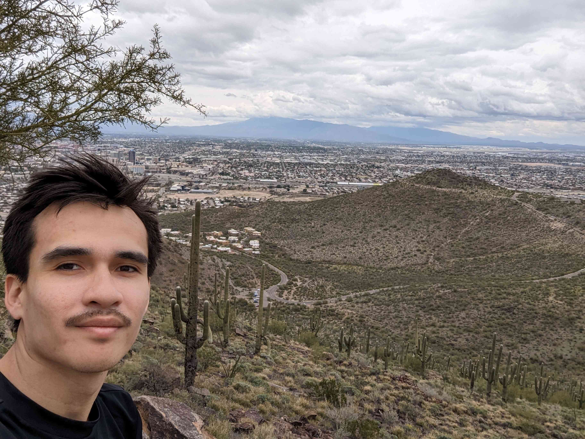

PhD Candidate
Department of Earth and Environmental Sciences, Columbia University
Rainfall, climate variability and predictions in Central America Experiencing the rain. Winner entry of the 2025 Research as Art contest at Lamont-Doherty Earth Observatory, Columbia University.
Hello, my name is Alan Andrés García López but you can call me Alan. I am Guatemalan and I grew up in Guatemala City.
I am a researcher in atmospheric science studying rainfall variability in Central America.
My main research goal is to understand physical mechanisms that influence precipitation in Central America
to the generation of operational forecasts and climate information services.
Email: agarcia at ldeo dot columbia dot edu

Tucson, Arizona from Tumamoc Hill.
Some rainy clouds in the back,
giving water to the desert plants.
García-López, A., Muñoz, A., Seager, R.,
& Miller, R. (2026).
Rainy season onset in Central America and the influence of
the ENSO decaying phase.
Journal of Climate. In press.
Kowal, K., Slater, L., Li, S., Kelder, T., Hall, K.,
Moulds, S., García-López, A.,
& Birkel, C. (2024).
Process-informed subsampling improves subseasonal rainfall
forecasts in Central America.
Geophysical Research Letters, 51(1), e2023GL105891.
https://doi.org/10.1029/2023GL105891
Jupin, J., García-López, A.,
Briceño-Zuluaga, F., Sifeddine, A., Ruiz-Fernández, A.,
Sanchez-Cabeza, J.-A., & Cardoso-Mohedano, J. (2024).
Precipitation homogenization and trends in the Usumacinta
River Basin (Mexico-Guatemala) over the period 1959–2018.
International Journal of Climatology, 44(1), 108–125.
https://doi.org/10.1002/joc.8318
Kowal, K., Slater, L., García-López, A.,
& Van Loon, A. (2023).
A comparison of seasonal rainfall forecasts over Central
America using dynamic and hybrid approaches from Copernicus
Climate Change Service seasonal forecasting system and
the North American Multimodel Ensemble.
International Journal of Climatology, 43(5), 2175–2199.
https://doi.org/10.1002/joc.7969
García-Pérez, J., García-López, A.,
Carrillo-Ovalle, L., Solares-Cortez, N.,
& López-Bran, R. (2020).
Florecimiento algal nocivo por Pyrodinium bahamense
en diciembre 2018 en la costa del Pacífico de Guatemala.
Ciencia, Tecnología y Salud, 7(1).
https://doi.org/10.36829/63CTS.v7i1.810
Negrete, C. A., Dultzin, D., Marziani, P., Esparza, D.,
Sulentic, J. W., del Olmo, A., Martínez-Aldama, M. L.,
García-López, A., D'Onofrio, M.,
Bon, N., & Bon, E. (2018).
Highly accreting quasars: The SDSS low-redshift catalog.
Astronomy & Astrophysics, 620, A118.
https://doi.org/10.1051/0004-6361/201833285
Non-refereed Publications
Tun, L., & García-López, A. (2024).
Erratic rain threatens food security in Guatemala,
Central America in 2023.
In A. Toreti, D. Tsegai, & L. Rossi (Eds.),
World Drought Atlas (Part 3: Regional perspectives).
Publications Office of the European Union.
https://doi.org/10.2760/3842670
Goddard, L., González-Romero, C., Muñoz, A. G.,
Acharya, N., …, García-López, A.,
et al. (2020).
Climate services ecosystems in times of COVID-19.
WMO Bulletin, 69(2), 39–46.
https://hdl.handle.net/10568/111389
Nubes
No habrá una sola cosa que no sea
una nube. Lo son las catedrales
de vasta piedra y biblícos cristales
que el tiempo allanará. Lo es la Odisea,
que cambia como el mar. Algo hay distinto
cada vez que la abrimos. El reflejo
de tu cara ya es otro en el espejo
y el día es un dudoso laberinto.
Somos los que se van. La numerosa
nube que se deshace en el poniente
es nuestra imagen. Incesantemente
la rosa se convierte en otra rosa.
Eres nube, eres mar, eres olvido.
Eres también aquello que has perdido.